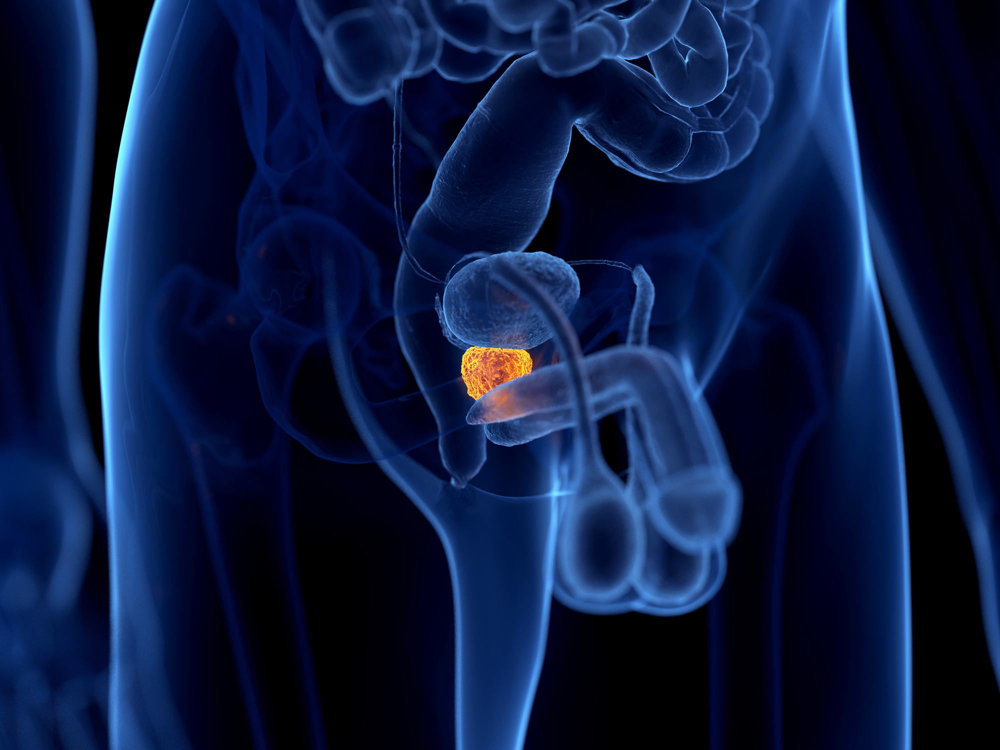

Prostatite
Les cystites sont des inflammations de la vessie, souvent causées par des infections bactériennes. Elles se manifestent par des symptômes urinaires tels que des douleurs, des brûlures et des envies fréquentes d'uriner.
Les principales sortes de cystites :
Infection brutale et passagère de la vessie, généralement causée par une bactérie (souvent E. coli).
Sortes avec explication :
Chez la femme, sans fièvre ni complications.
Chez l’homme, la femme enceinte, ou avec fièvre, anomalies urinaires.
Antibiotiques courts (fosfomycine, nitrofurantoïne)
Boire beaucoup d’eau
Antalgiques si douleur
Boire 1,5–2 L d’eau par jour
Uriner après les rapports
Hygiène intime douce (pas de produits agressifs)
Éviter la rétention urinaire
Infections urinaires récurrentes (≥3 épisodes par an) ou symptômes persistants sans infection active.
Sortes :
Réinfections à répétition, souvent E. coli
Inflammation chronique de la paroi vésicale, sans germe
Antibiothérapie adaptée (après ECBU)
Traitement au long cours préventif si récidives
Traitements spécifiques pour cystite interstitielle (instillations, antalgiques, régime alimentaire)
Hydratation quotidienne
Comportements urinaires adaptés
Prise de probiotiques ou canneberge (efficacité variable)
Suivi urologique si récidives fréquentes
La prostatite est une inflammation de la prostate, une petite glande située sous la vessie chez l’homme. Elle peut être infectieuse (due à une bactérie) ou non infectieuse, et elle peut être aiguë ou chronique.
Les principales sortes de prostatite :
Infection soudaine et bactérienne de la prostate, souvent grave si non traitée.
Sortes :
infection localisée sans complication
Avec rétention urinaire, abcès ou atteinte rénale
Hydratation quotidienne
Antalgiques, anti-inflammatoires
Prise de probiotiques ou canneberge (efficacité variable)
Hospitalisation si signes de gravité
Traiter précocement les infections urinaires
Bonne hygiène intime
Éviter manipulation traumatique de la prostate (ex : massage prostatique)
Infection de la prostate persistante ou récidivante, souvent moins aiguë mais tenace.
Sortes :
Infection confirmée par cultures
Plusieurs poussées séparées dans le temps
Antibiothérapie longue (4–6 semaines) adaptée à l’antibiogramme
Alpha-bloquants si troubles urinaires
Antalgiques, physiothérapie si douleurs chroniques
Antalgiques, physiothérapie si douleurs chroniques
Hydratation et vidange régulière de la vessie
Éviter le vélo prolongé ou les pressions sur la prostate
Le cancer de la prostate est une tumeur maligne qui se développe dans les cellules de la prostate, une glande de l'appareil reproducteur masculin. Il est l’un des cancers les plus fréquents chez les hommes, surtout après 50 ans.
Les principales sortes de cancer de la prostate :
Cancer malin qui prend naissance dans les cellules glandulaires des glandes (ex : poumon, prostate, sein).
Sortes :
formation de structures en forme de papilles, souvent bien différencié.
formes avec tubules glandulaires bien formés.
Production abondante de mucus, souvent associé à un pronostic variable.
Formes avec tubules glandulaires bien formés. masses compactes sans formation glandulaire claire, généralement plus agressif.
Chirurgie si possible
Radiothérapie
Chimiothérapie selon le stade et l’organe
Éviter facteurs de risque (tabac, alcool, exposition pro)
Dépistage précoce dans certains cas
Cancer très agressif, souvent pulmonaire, constitué de petites cellules rondes avec peu de cytoplasme.
Sortes :
Cellules très petites, noyaux denses, croissance rapide.
Variante avec cytoplasme plus visible, rare.
Associé à d’autres types histologiques (ex : adénocarcinome), plus complexe.
Chimiothérapie intensive
Radiothérapie
Chirurgie rarement possible
Éviter le tabac
Dépistage précoce chez sujets à risque
L’incontinence urinaire est une perte involontaire d’urine, due à un dysfonctionnement des mécanismes de contrôle de la vessie. Elle touche les femmes plus fréquemment que les hommes, surtout avec l’âge ou après un accouchement.
Les principales sortes d’incontinence urinaire :
Fuite urinaire involontaire lors d’un effort augmentant la pression abdominale (toux, rire, effort physique).
Sortes :
Fuites occasionnelles, souvent lors d’efforts intenses (toux, saut).
Fuites plus fréquentes avec efforts moyens (marche rapide, lever d’objet).
Fuites même au moindre effort (simple changement de position).
Rééducation périnéale
Dispositifs anti-incontinence (tampons, pessaires)
Chirurgie (sling, bandelette sous-urétrale)
Éviter surcharge pondérale
Éviter constipation chronique
Renforcement musculaire du périnée
Besoin urgent et irrépressible d’uriner, avec fuites si on ne peut pas retenir.
Sortes :
Liée à des maladies neurologiques (AVC, sclérose en plaques).
Cause inconnue, souvent due à une hyperactivité vésicale.
Anticholinergiques (détenteur vésical)
Rééducation comportementale
Neuromodulation ou toxine botulique en cas sévère
Éviter irritants vésicaux (café, alcool)
Gestion du stress
Hydratation adaptée